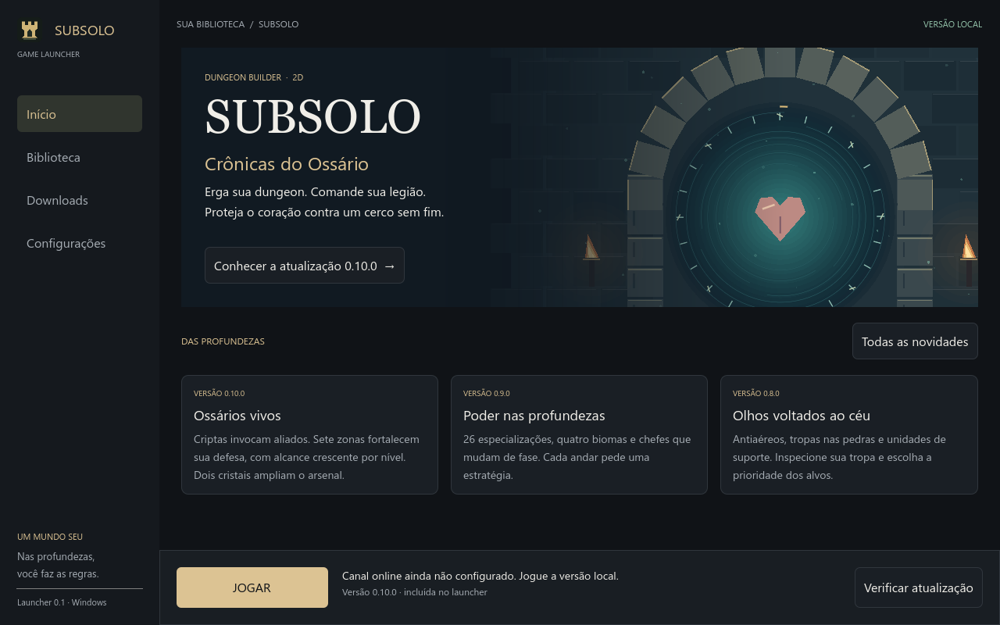

Sua dungeon, suas regras
Escave caminhos, construa defesas e prepare até quatro andares conectados por portais.
CONSTRUA · DEFENDA · RENASÇA
Crônicas do Ossário
Erga sua dungeon. Comande sua legião. Proteja o coração contra um cerco sem fim em um jogo de construção e defesa em 2D.
Baixar launcher para Windows
Escave caminhos, construa defesas e prepare até quatro andares conectados por portais.
Tropas de suporte, especialistas antiaéreos, aliados invocados e três dragões com ataques próprios.
Ondas infinitas, chefes em fases e uma árvore de talentos com especializações e renascimentos.
O launcher consulta novas versões ao abrir e oferece atualizações automáticas. Os pacotes são autenticados antes da instalação, e sua dungeon continua salva na pasta de dados do jogo.
A versão instalada também pode ser jogada offline. Mantenha o arquivo .pck e a subpasta game junto do launcher.
Versões e notas de atualização →